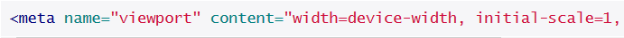

After finishing my graduation it seemed natural for me to continue studying and enroll in a master's degree, but by the end of the first semester I started to feel frustrated. It's very rewarding to grasp the knowledge you get from college, but after a few years it gets discouraging. I wanted more. More experience, more responsibility, more visibility. I felt it was time for me to learn by doing, working side by side with more experienced designers, in a professional environment.
They don't tell you this in design college, but the reason you go to college is to learn how to learn. No design college can do much more than this.
Adrian Shaughnessy in "How To Be A Graphic Designer Without Losing Your Soul"
When I started looking for a job I came across this small, exciting company called Group Buddies. I got in touch with them and soon I had a Skype call with Roberto (CEO) who told me about the apprenticeship program. It took me by surprise at the time, but after a few days it made perfect sense. I wanted to feel the weight of responsibility although I wasn't sure if I'd be ready to handle it, and working with a team that deals with that everyday seemed to be the perfect way for me to learn just how to do it. This apprenticeship would teach me how to work with real design problems, taking a design thinking approach.
[Apprenticeship] It's an unfashionable word with connotations of servility and poverty, but no matter what you call it, serving an apprenticeship is a necessary and unavoidable step on the road to becoming a mature designer. And it needn't be a dispiriting experience. The energizing charge that comes from learning from more experienced designers is invigorating. In design college you are thrown in with others in the same predicament as yourself.
Adrian Shaughnessy in "How To Be A Graphic Designer Without Losing Your Soul"
You never know if you're ready to do something until you start doing it. I never thought too much about it, but these two months were the period of time when I discovered more gaps in my knowledge. This wasn't by any means a bad thing, because the more mistakes I made the more I would improve. They never gave me solutions, they showed me how to get there by thinking about the problem from the ground up, defying every assumption I made and exploring as much as possible, never being satisfied with an "acceptable" iteration. They were, and still are, a team that supports me and helps me grow, by pushing me far beyond my known limits.
In Buddhism, there’s something called the beginner’s mind. If you’ve ever done any kind of guided meditation, you’re probably familiar. It refers to having an attitude of openness, of eagerness. You drop your heavy preconceptions and revitalize a practice by finding a new way to look at it.
Frank Chimero
I will always remember the first project I worked on during the apprenticeship for a multitude of reasons. One of them is because I had never done so many iterations for a project in my life. Whenever I thought I was on to something and confidently showed someone my great achievement, I was sure that after talking with that person I would do three or four more iterations. Their standards are so high that they forced me to always do better and never feel satisfied with what I'd produced. I started working each element of the product as if that element alone was also a product. An element can only become a part of the product prototype when it shows a lot of thinking went into designing it and that's the most important thing that I've learned in Group Buddies.
Everything is thoughtfully crafted and reviewed several times. It's this craftsmanship that distinguishes good design from great design and GB is definitely striving to be great.
In "Dreams of Sushi", Jiro Ono shows us that in order to achieve excellence you have to be in love with what you do. It must be part of your life. In Jiro's sushi bar, it takes 10 years of dedicated work to be considered a master craftsman. I often find myself thinking of solutions for something I'm working on when I'm not at work or I'm doing things that have nothing to do with it. When I lie down at night I never fall asleep without thinking a bit on the project I'm working on. It comes naturally, I don't control it. This makes it cristal clear for me that I'm doing what I love.
We easily forget that in order to create something that truly stands out and delights customers it takes vision, passion and standards that are way beyond ‘standard’.
We craft products that show passion, care and attention to detail. That's what our clients can expect from us. Products that are refined by well-prepared processes. I would never have found such a great desire to improve in product creation processes. It's by repeating these processes that you grow, improving a little bit more every time you do it.
This experience has dramatically changed the way I perceive design and how I work. It made me more perceptive and patient. It turned me into a better designer.
Mobile web applications are expected to work differently from desktop applications. They need to feel responsive to the user's touch. Having worked on a couple of mobile web applications in the last year, I found that I always start by changing the browser's default appearance and behaviour. This article contains my setup to make a mobile web application feel more like a native one.
The following is a set of rules I use in every mobile web application. Keep in mind that some of these are my personal preference.
When using a mobile framework, like ionic, you usually don't need to worry about this, it's already there. Also, remember to run these styles through autoprefixer, since you'll need the vendor prefixes.
To adjust the browser's viewport for a mobile application you can use the following meta tag:

The part sets the width of the viewport as the width of the device.
The property controls the zoom level when the page is first loaded, and the property prevents the user from zooming in and out on your mobile application.
Most mobile browsers have an "elastic" overscroll for the entire page. This is the reason why, in some web sites, you can pull down the header (that's fixed on the top), revealing a empty layer behind the application. You usually don't want this.
On Apache Cordova, pasting the following rules in the file should do the trick of disabling the overscroll.
On a regular browser you can disable the touchmove on the document, which obtains the same result.
Even though you don't want a full page overscroll, some places of the application may require scroll. For those places you can enable it with the following rules.
Notice that on the JavaScript we are excluding the class . You need to add this class to the places you want scrollable content. The enables the "momentum" style scrolling.
The tips I've shared should be helpful for every application. But it doesn't stop here. There is much more you can do to improve the look and feel of a mobile web application, but I'll leave that for another blog post.
For those who don't see the web as a viable platform for mobile, give it another chance. You might end up feeling utterly surprised.